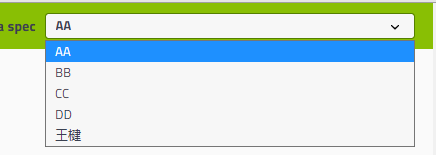

Swagger-狂神说
一、Swagger
1.Swagger
- 号称世界上最流行的API框架
- Restful Api 文档在线自动生成器 =>
API 文档 与API 定义同步更新 - 直接运行，在线测试API
- 支持多种语言 （如：Java，PHP等）
- 官网：https://swagger.io/
2.SpringBoot集成Swagger
1、导入 springfox，两个jar包
1 | <dependency> |
2、使用Swagger
- 要使用Swagger，我们需要编写一个配置类-SwaggerConfig来配置 Swagger
1 | //配置类 |
- 访问测试 ：http://localhost:8080/swagger-ui.html ，可以看到swagger的界面；
3.配置Swagger
Swagger实例Bean是Docket，所以通过配置Docket实例来配置Swaggger。
1
2
3
4//配置docket以配置Swagger具体参数
public Docket docket() {
return new Docket(DocumentationType.SWAGGER_2);
}可以通过apiInfo()属性配置文档信息
1
2
3
4
5
6
7
8
9
10
11
12
13
14//配置文档信息
private ApiInfo apiInfo() {
Contact contact = new Contact("联系人名字", "http://xxx.xxx.com/联系人访问链接", "联系人邮箱");
return new ApiInfo(
"Swagger学习", // 标题
"学习演示如何配置Swagger", // 描述
"v1.0", // 版本
"http://terms.service.url/组织链接", // 组织链接
contact, // 联系人信息
"Apach 2.0 许可", // 许可
"许可链接", // 许可连接
new ArrayList<>()// 扩展
);
}Docket 实例关联上 apiInfo()
1
2
3
4
public Docket docket() {
return new Docket(DocumentationType.SWAGGER_2).apiInfo(apiInfo());
}
4.配置扫描接口
构建Docket时通过select()方法配置怎么扫描接口。
1
2
3
4
5
6
7
8
public Docket docket() {
return new Docket(DocumentationType.SWAGGER_2)
.apiInfo(apiInfo())
.select()// 通过.select()方法，去配置扫描接口,RequestHandlerSelectors配置如何扫描接口
.apis(RequestHandlerSelectors.basePackage("nuc.ss.swagger.controller"))
.build();
}
5.配置Swagger开关
通过enable()方法配置是否启用swagger，如果是false，swagger将不能在浏览器中访问了
1
2
3
4
5
6
7
8
9
10
11
public Docket docket() {
return new Docket(DocumentationType.SWAGGER_2)
.apiInfo(apiInfo())
.enable(false) //配置是否启用Swagger，如果是false，在浏览器将无法访问
.select()
.apis(RequestHandlerSelectors.basePackage("nuc.ss.swagger.controller"))
.paths(PathSelectors.ant("/ss/**"))
.build();
}如何动态配置当项目处于test、dev环境时显示swagger，处于prod时不显示？
1
2
3
4
5
6
7
8
9
10
11
12
13
14
15
16
public Docket docket(Environment environment) {
// 设置要显示swagger的环境
Profiles of = Profiles.of("dev", "test");
// 判断当前是否处于该环境
// 通过 enable() 接收此参数判断是否要显示
boolean b = environment.acceptsProfiles(of);
return new Docket(DocumentationType.SWAGGER_2)
.apiInfo(apiInfo())
.enable(b)
.select()
.apis(RequestHandlerSelectors.basePackage("com.kuang.swagger.controller"))
.paths(PathSelectors.ant("/ss/**"))
.build();
}
6.配置API分组
如果没有配置分组，默认是default。通过groupName()方法即可配置分组：
1
2
3
4
5
6
public Docket docket(Environment environment) {
return new Docket(DocumentationType.SWAGGER_2).apiInfo(apiInfo())
.groupName("wj") // 配置分组
// 省略配置....
}
7.实体配置
新建一个实体类
1
2
3
4
5
6
7
8
9
10
11
12
13package com.wj.pojo;
import io.swagger.annotations.ApiModel;
import io.swagger.annotations.ApiModelProperty;
public class User {
public String username;
public String password;
}- @ApiModel为类添加注释
- @ApiModelProperty为类属性添加注释
8.接口配置
接口配置
1
2
3
4
5
6
7
8
9
10
11
12
13
14
15
16
17
18
19
20
21
22
23
24
25
26
27
28package com.wj.controller;
import com.wj.pojo.User;
import io.swagger.annotations.Api;
import io.swagger.annotations.ApiOperation;
import io.swagger.annotations.ApiParam;
import io.swagger.annotations.Tag;
import org.springframework.web.bind.annotation.*;
public class HelloController {
public String hello() {
return "hello swagger";
}
// 只要接口中，返回值中存在实体类，他就会被扫描到 swagger 中
public User user() {
return new User();
}
public String hello2( String name) {
return "hello" + name;
}
}
9.常用的注解
1.@Api()
用于类； 表示标识这个类是swagger的资源 ，与Controller注解并列使用。 属性配置：
| 属性名称 | 备注 | 默认值 |
|---|---|---|
| value | url的路径值 | |
| tags | 如果设置这个值、value的值会被覆盖 | |
| description | 对api资源的描述 | |
| basePath | 基本路径可以不配置 | |
| position | 如果配置多个Api 想改变显示的顺序位置 | |
| produces | For example, “application/json, application/xml” | |
| consumes | For example, “application/json, application/xml” | |
| protocols | Possible values: http, https, ws, wss. | |
| authorizations | 高级特性认证时配置 | |
| hidden | 配置为true 将在文档中隐藏 |
2.@ApiOperation()
用于方法； 表示一个http请求的操作，与Controller中的方法并列使用。
| 属性名称 | 备注 | 默认值 |
|---|---|---|
| value | url的路径值 | |
| tags | 如果设置这个值、value的值会被覆盖 | |
| notes | 对api资源的描述 | |
| response | 返回的对象 | |
| responseContainer | 这些对象是有效的 “List”, “Set” or “Map”.，其他无效 | |
| responseReference | 可以不配置 | |
| httpMethod | 可以接受 “GET”, “HEAD”, “POST”, “PUT”, “DELETE”, “OPTIONS” and “PATCH” | |
| position | 如果配置多个Api 想改变显示的顺序位置 | |
| produces | 同 Api中的定义 | |
| consumes | 同 Api中的定义 | |
| protocols | 同 Api中的定义 | |
| authorizations | 同 Api中的定义 | |
| hidden | 同 Api中的定义 | |
| code | http的状态码 默认 200 | |
| extensions | 扩展属性 |
3.@ApiParam()
用于方法，参数，字段说明； 表示对参数的添加元数据（说明或是否必填等）
| 属性名称 | 备注 | 默认值 |
|---|---|---|
| name | 属性名称 | |
| value | 属性值 | |
| defaultValue | 默认属性值 | |
| allowableValues | 可以不配置 | |
| required | 是否属性必填 | |
| access | 不过多描述 | |
| allowMultiple | 默认为false | |
| hidden | 隐藏该属性 | |
| example | 举例子 | |
| examples |
- @ApiModel()用于类
表示对类进行说明，用于参数用实体类接收 - @ApiModelProperty()用于方法，字段
表示对model属性的说明或者数据操作更改 - @ApiIgnore()用于类，方法，方法参数
表示这个方法或者类被忽略 - @ApiImplicitParam() 用于方法
表示单独的请求参数 - @ApiImplicitParams() 用于方法，包含多个 @ApiImplicitParam
本博客所有文章除特别声明外，均采用 CC BY-NC-SA 4.0 许可协议。转载请注明来自 Eric！
 微信
微信 支付宝
支付宝

评论